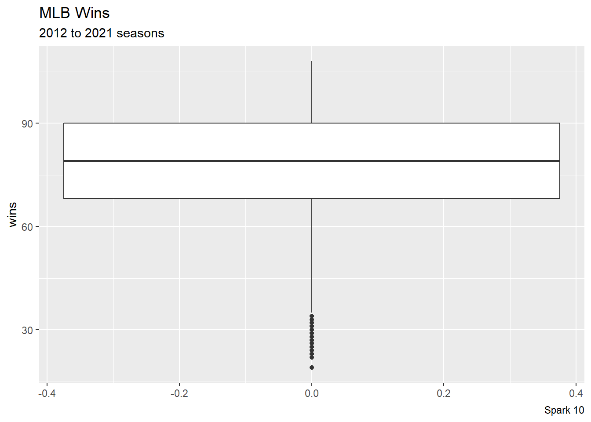
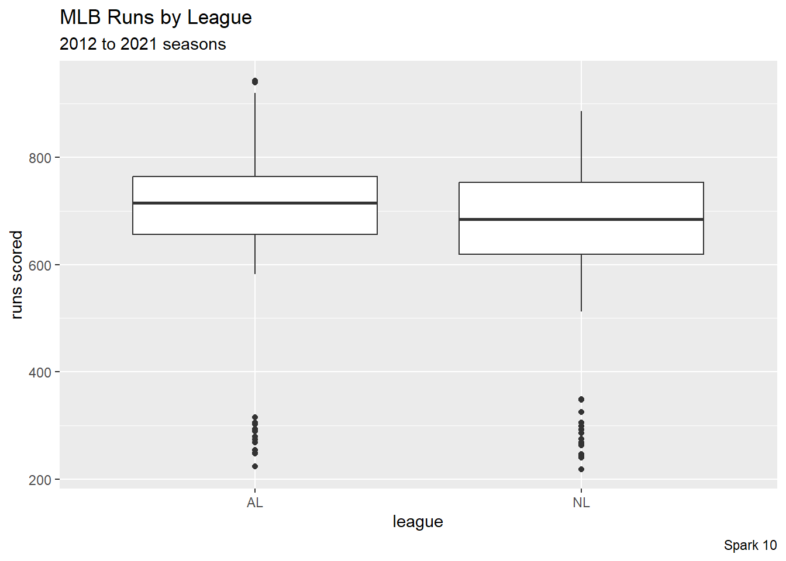
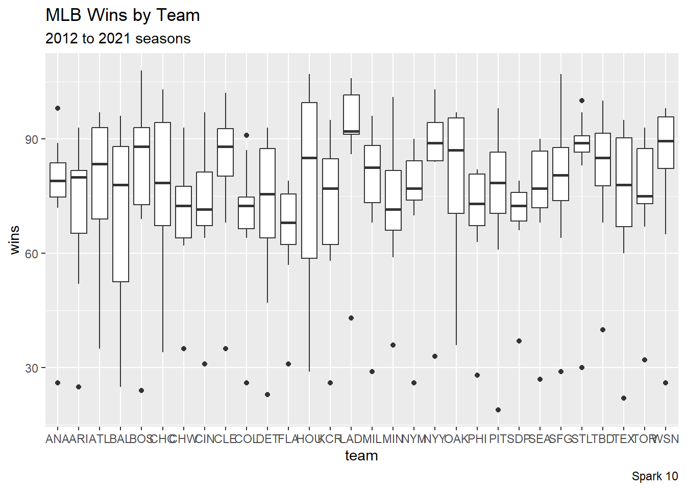
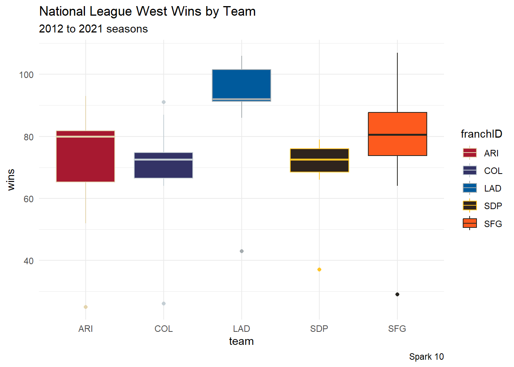

library("tidyverse")Load the Tidyverse
The tidyverse suite of packages are streamlined to make data science processes easier. We can load the packages with the library() command.
Example
Load the Data
Since we have CSV files (comma-separated values), the read_csv() command in the readr package will be convenient here. I tend to save data set into a variable df (stands for “data frame”).
Today’s data set comes from the Lahman package, which contains a lot of historical data about Major League Baseball.
df <- readr::read_csv("baseball_teams_data.csv")Look at the Data
One way to get a quick look at the data set is with the head() command (outputs the first few rows and columns).
head(df)# A tibble: 6 × 48
yearID lgID teamID franchID divID Rank G Ghome W L DivWin WCWin
<dbl> <chr> <chr> <chr> <chr> <dbl> <dbl> <dbl> <dbl> <dbl> <chr> <chr>
1 2012 NL ARI ARI W 3 162 81 81 81 N N
2 2012 NL ATL ATL E 2 162 81 94 68 N Y
3 2012 AL BAL BAL E 2 162 81 93 69 N Y
4 2012 AL BOS BOS E 5 162 81 69 93 N N
5 2012 AL CHA CHW C 2 162 81 85 77 N N
6 2012 NL CHN CHC C 5 162 81 61 101 N N
# ℹ 36 more variables: LgWin <chr>, WSWin <chr>, R <dbl>, AB <dbl>, H <dbl>,
# X2B <dbl>, X3B <dbl>, HR <dbl>, BB <dbl>, SO <dbl>, SB <dbl>, CS <dbl>,
# HBP <dbl>, SF <dbl>, RA <dbl>, ER <dbl>, ERA <dbl>, CG <dbl>, SHO <dbl>,
# SV <dbl>, IPouts <dbl>, HA <dbl>, HRA <dbl>, BBA <dbl>, SOA <dbl>, E <dbl>,
# DP <dbl>, FP <dbl>, name <chr>, park <chr>, attendance <dbl>, BPF <dbl>,
# PPF <dbl>, teamIDBR <chr>, teamIDlahman45 <chr>, teamIDretro <chr>We can also look at the structure of a data frame with the str() command. In particular, this view allows us to quickly see which variables are numerical and which are categorical.
str(df, give.attr = FALSE)spc_tbl_ [300 × 48] (S3: spec_tbl_df/tbl_df/tbl/data.frame)
$ yearID : num [1:300] 2012 2012 2012 2012 2012 ...
$ lgID : chr [1:300] "NL" "NL" "AL" "AL" ...
$ teamID : chr [1:300] "ARI" "ATL" "BAL" "BOS" ...
$ franchID : chr [1:300] "ARI" "ATL" "BAL" "BOS" ...
$ divID : chr [1:300] "W" "E" "E" "E" ...
$ Rank : num [1:300] 3 2 2 5 2 5 1 4 5 1 ...
$ G : num [1:300] 162 162 162 162 162 162 162 162 162 162 ...
$ Ghome : num [1:300] 81 81 81 81 81 81 81 81 81 81 ...
$ W : num [1:300] 81 94 93 69 85 61 97 68 64 88 ...
$ L : num [1:300] 81 68 69 93 77 101 65 94 98 74 ...
$ DivWin : chr [1:300] "N" "N" "N" "N" ...
$ WCWin : chr [1:300] "N" "Y" "Y" "N" ...
$ LgWin : chr [1:300] "N" "N" "N" "N" ...
$ WSWin : chr [1:300] "N" "N" "N" "N" ...
$ R : num [1:300] 734 700 712 734 748 613 669 667 758 726 ...
$ AB : num [1:300] 5462 5425 5560 5604 5518 ...
$ H : num [1:300] 1416 1341 1375 1459 1409 ...
$ X2B : num [1:300] 307 263 270 339 228 265 296 266 306 279 ...
$ X3B : num [1:300] 33 30 16 16 29 36 30 24 52 39 ...
$ HR : num [1:300] 165 149 214 165 211 137 172 136 166 163 ...
$ BB : num [1:300] 539 567 480 428 461 447 481 555 450 511 ...
$ SO : num [1:300] 1266 1289 1315 1197 1203 ...
$ SB : num [1:300] 93 101 58 97 109 94 87 110 100 59 ...
$ CS : num [1:300] 51 32 29 31 43 45 27 44 40 23 ...
$ HBP : num [1:300] 41 34 50 45 65 43 47 59 36 57 ...
$ SF : num [1:300] 45 46 30 55 36 24 37 39 39 39 ...
$ RA : num [1:300] 688 600 705 806 676 759 588 845 890 670 ...
$ ER : num [1:300] 626 549 642 754 646 708 540 766 824 596 ...
$ ERA : num [1:300] 3.93 3.42 3.9 4.7 4.02 4.51 3.34 4.78 5.22 3.75 ...
$ CG : num [1:300] 4 5 1 6 6 1 9 2 0 9 ...
$ SHO : num [1:300] 9 16 10 4 11 9 12 6 7 8 ...
$ SV : num [1:300] 39 47 55 35 37 28 56 43 36 40 ...
$ IPouts : num [1:300] 4301 4336 4449 4329 4337 ...
$ HA : num [1:300] 1432 1310 1433 1449 1365 ...
$ HRA : num [1:300] 155 145 184 190 186 175 152 174 198 151 ...
$ BBA : num [1:300] 417 464 481 529 503 573 427 543 566 438 ...
$ SOA : num [1:300] 1200 1232 1177 1176 1246 ...
$ E : num [1:300] 90 86 106 101 70 105 89 96 122 99 ...
$ DP : num [1:300] 146 147 151 159 154 148 113 157 139 127 ...
$ FP : num [1:300] 0.985 0.986 0.983 0.983 0.988 0.982 0.985 0.984 0.98 0.983 ...
$ name : chr [1:300] "Arizona Diamondbacks" "Atlanta Braves" "Baltimore Orioles" "Boston Red Sox" ...
$ park : chr [1:300] "Chase Field" "Turner Field" "Oriole Park at Camden Yards" "Fenway Park II" ...
$ attendance : num [1:300] 2177617 2420171 2102240 3043003 1965955 ...
$ BPF : num [1:300] 105 102 102 106 106 98 107 93 120 104 ...
$ PPF : num [1:300] 106 101 103 106 106 99 107 95 121 103 ...
$ teamIDBR : chr [1:300] "ARI" "ATL" "BAL" "BOS" ...
$ teamIDlahman45: chr [1:300] "ARI" "ATL" "BAL" "BOS" ...
$ teamIDretro : chr [1:300] "ARI" "ATL" "BAL" "BOS" ...Another convenient tool for our programming purposes is looking at the column names (i.e. variable names that we need to type later)
colnames(df) [1] "yearID" "lgID" "teamID" "franchID"
[5] "divID" "Rank" "G" "Ghome"
[9] "W" "L" "DivWin" "WCWin"
[13] "LgWin" "WSWin" "R" "AB"
[17] "H" "X2B" "X3B" "HR"
[21] "BB" "SO" "SB" "CS"
[25] "HBP" "SF" "RA" "ER"
[29] "ERA" "CG" "SHO" "SV"
[33] "IPouts" "HA" "HRA" "BBA"
[37] "SOA" "E" "DP" "FP"
[41] "name" "park" "attendance" "BPF"
[45] "PPF" "teamIDBR" "teamIDlahman45" "teamIDretro" A Starter Boxplot
df |>
ggplot(aes(y = W)) +
geom_boxplot() +
labs(title = "MLB Wins",
subtitle = "2012 to 2021 seasons",
caption = "Spark 10",
y = "wins")
The thick line in the middle of the boxplot is at the median value of the data. The start and end of the box are at the 25th and 75th percentiles. Statisticians call the difference between the 25th and 75th percentiles the interquartile range (IQR). The “whiskers” extend 1.5 times the IQR. Finally, additional points beyond the whiskers may be thought of as outliers.
Comparisons
This is the code block that most students will want to use.
df |>
ggplot(aes(x = lgID, y = R),
color = "yellow", fill = "blue") +
geom_boxplot() +
labs(title = "MLB Runs by League",
subtitle = "2012 to 2021 seasons",
caption = "Spark 10",
x = "league",
y = "runs scored")
Boxplots are particularly useful to graph a numerical variable (on the \(y\)-axis) across a categorical variable (on the \(x\)-axis). A lot of research is shown with side-by-side boxplots.
Grouping
Here are some advanced examples. We can use the group parameter to tell R how to organize the data.
df |>
ggplot(aes(x = franchID, y = W, group = franchID)) +
geom_boxplot() +
labs(title = "MLB Wins by Team",
subtitle = "2012 to 2021 seasons",
caption = "Spark 10",
x = "team",
y = "wins")
Especially in sports, the categorical data might have too many labels for a visually-pleasing graph (here: too many teams to teams to think about simultaneously). We can use the filter commend (SQL skills) to help us look at a small amount of labels and make the graph easier to read.
df |>
filter(franchID %in% c("ARI", "COL", "LAD", "SDP", "SFG")) |>
ggplot(aes(x = franchID, y = W, group = franchID)) +
geom_boxplot(aes(color = franchID, fill = franchID)) +
# https://teamcolorcodes.com/mlb-color-codes/
scale_color_manual(values = c("#E3D4AD", "#C4CED4", "#A5ACAF", "#FFC425", "#27251F")) +
scale_fill_manual(values = c("#A71930", "#333366", "#005A9C", "#2F241D", "#FD5A1E")) +
labs(title = "National League West Wins by Team",
subtitle = "2012 to 2021 seasons",
caption = "Spark 10",
x = "team",
y = "wins") +
theme_minimal()
Exercises
Load your data set (for your sport) using the read_csv command and save the data frame as df.
Use the head, str, and colnames commands to look at your data set.
Build two different boxplot visualizations. Be sure to change the labs (labels) to describe your data set well.
Wrap Up
- Click
Renderto create the HTML file - Check the checkbox next to the HTML file (in the Files pane)
- Click the gear (“More”), and then click “Export”
- Upload the HTML file back into our CatCourses space